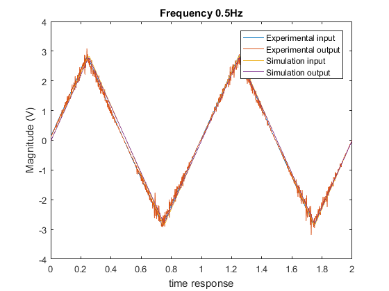
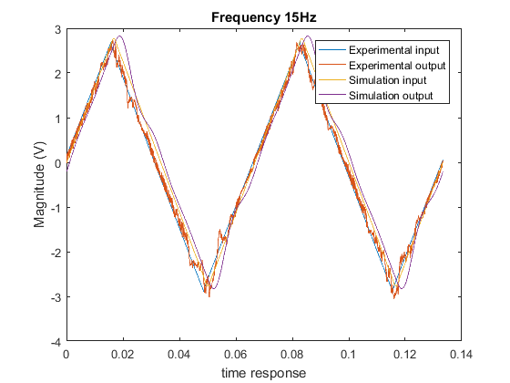
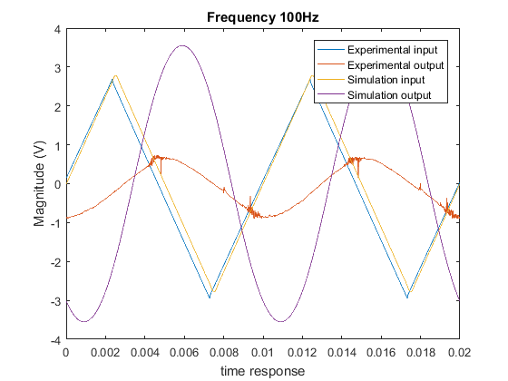

Contents
Lab 5 Comparison.
%reworking the code from lab 4 I have rewritten the following code.
clear
clc
From lab 3 data to set up the equation
k = 1.6;
j = 1.5;
wn = 85;
a = 90000;
kp=(10.796*1000)/430; % From using the multimeter.
Creating the transfer function.
%Revised transfer function because we have a feed back loop. I=[0.5 15 100] ; %Frequencies defined
The For loop for each section
for i=1:3
%This will load the data for each time of the for loop. %Period Defined if i==1 load 0_5Hz.txt; %Loading lab measured data time = X0_5Hz(:,1); %Isolating time, Experimental input & output X = X0_5Hz(:,2); %Isolating experimental data column from txt file Y = X0_5Hz(:,3); %Isolating simulated data column from txt file A = (max(X)-min(X))/2; %clear x0_5Hz T = 1/0.5; t = linspace(0,2*T,1000); %Time broken up into increments end %Period Defined if i==2 load 15Hz.txt; %Loading lab measured data time = X15Hz(:,1); %Isolating time, Experimental input & output X = X15Hz(:,2); %Isolating experimental data column from txt file Y = X15Hz(:,3); %Isolating simulated data column from txt file A = (max(X)-min(X))/2; T = 1/15; %clear X15Hz_lab5 t = linspace(0,2*T,2000); %Time broken up into increments end %Period Defined if i==3 load 100Hz.txt; %Loading lab measured data time = X100Hz(:,1); %Isolating time, Experimental input & output X = X100Hz(:,2); %Isolating experimental data column from txt file Y = X100Hz(:,3); %Isolating simulated data column from txt file A = (max(X)-min(X))/2; %clear X100Hz_lab5 T = 1/100; t = linspace(0,2*T,2000); %Time broken up into increments end
System 1
% System 1 num1 = [0 0 k*kp*wn^2]; % the numerator den1 = [1 2*j*wn wn^2]; % The demnoomatier % System 2 num2 = [0 1 ]; den2 = [1/a 1]; [num,den] = series(num1,den1,num2,den2); % Adding the two systems together. sys1=tf(num,den); %creates a continuous-time transfer function
System 2 Adding the P term ??
sys2=feedback(sys1,1); %computes a closed-loop model M for the feedback loop
x = 0; y = 0;
System 3 this is adding the integral term.
Initiation of for loop for each frequency
for n = 1:2:30 an = 8*A/(pi*n)^2; %amplitude defined x = x + an*cos(2*pi*n*(t-T/4)/T); %Input Magnitude defined... ..., and phase shift [m,p] = bode(sys2,2*pi*n/T); %Creating Bode plot y = y + an*m*cos(2*pi*n*(t - T/4)/T + p*pi/180);%Output Magnitude defined end
The graphing of the data.
figure(i) plot(time,X,time,Y,time,x,time,y) %Plotting Simulated input/output and expiremental input/output title(['Frequency ' num2str(I(i)) 'Hz']) %Adding Frequency dependent title xlabel('time response') %Labeling the x and y axis on plot ylabel('Magnitude (V)') %Adding legend to plot legend('Experimental input','Experimental output','Simulation input','Simulation output')  
end % %Part C % clc % % % WE are comparing the feed back system to that of the non feed back % % system. % %% The non feed back system % num=[0 0 k*kp*wn^2]; % dem=[1 2*j*wn wn^2]; % % % %% The system with and with our a feed back loop. % w=1:0.01:10000; % % [m1,p1]=bode(num,dem,w); % m1=20*log10(m1)-30; % % The system with feed back. % sys1=tf(num,dem); % sys=feedback(sys1,1); % just a simple feed back loop. % % [m2,p2]=bode(sys,w); % m2=20*log10(m2); % % %% The Graph the system with and with out feed. % figure(5) % % subplot(2,1,1) % semilogx(w,m1,'-',w,m2(1,:),'.') % title('Bode Comparison Open Vs Closed Loop (Magnitude)') % xlabel('Frequency (rad/sec)') % ylabel('Magnitude (dB)') % legend('Open Loop','Closed Loop','Location','SouthWest') % subplot(2,1,2) % semilogx(w,p1,'-.',w,p2(1,:),'.') % title('Bode Comparison Open Vs Closed Loop (Phase)') % xlabel('Frequency (rad/sec)') % ylabel('Phase Shift (deg)') % set(gca,'YTick',-360:90:180) % axis([1 10000 -270 90]) % grid on % legend('Open Loop','Closed Loop','Location','SouthWest')